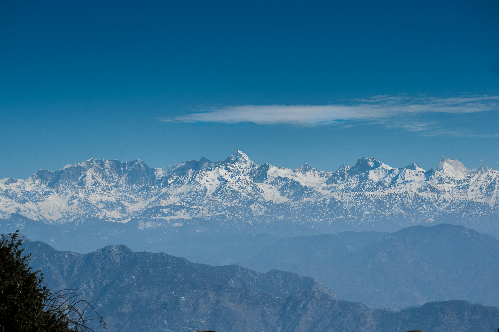

India is home to beautiful beaches with golden sands, clear waters, and stunning coastal landscapes. Goa and Kerala are among the most popular destinations for beach lovers.

From the Himalayas to the green hills of Meghalaya, India's mountains offer breathtaking views, peaceful surroundings, and exciting opportunities for trekking and adventure.


India's rich history can be seen through its magnificent forts, palaces, monuments, and ancient architecture. These places reflect the country's diverse cultures and civilizations.


India's cities combine modern development with centuries-old traditions. Delhi, Mumbai, Kolkata, and other cities offer unique experiences, architecture, food, and cultural attractions.